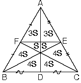

| eşitlikleri vardır. |

1. Ağırlık Merkezi
Üçgenlerde kenarortaylar bir noktada kesişirler.Kenarortayların kesişim noktasına ağırlık merkezi denir.
| ABC üçgeninde [AD], [BE] ve [CF] kenarortaylarınınkesiştikleri G noktasına ABC üçgeninin ağırlık merkezi
denir. |
a. Ağırlık merkezi kenarortayı, kenara 1 birim, köşeye 2 birim olacak şekilde böler.
| ABC üçgeninde D, E, F noktaları bulundukları kenarlarınorta noktaları ve G ağırlık merkezi ise
|
|
| b. Bir üçgende iki kenarortayın kesişmesiyle oluşan nokta ağırlık merkezidir. |
| c. ABC üçgeninde [AD] kenarortay ve|AG| = 2|GD| olduğundan G noktası
ağırlık merkezidir. |
| d. ABC üçgeninde [AD] kenarortay ve |CG| = 2|FG|olduğundan G noktası ağırlık merkezidir. |
| e. ABC üçgeninde|AG| = 2|GD| ve |CG| = 2|GF|
eşitliğini sağlayan G noktası ABC üçgeninin ağırlık merkezidir. |
2. Dik üçgende hipotenüse ait kenarortay hipotenüsün yarısına eşittir.
| ABC dik üçgeninde [BD] hipotenüse ait kenarortay
|
3. Kenarortayların Böldüğü Alanlar
| a.Kenarortaylar üçgenin alanını altı eşit parçaya bölerler. |
| b.G ağırlık merkezi köşelere birleştirildiğinde üçgenin alanı üç eşit parçaya bölünür. |
| c. G ağırlık merkezi kenarların orta noktaları ile birleştirildiğinde üçgenin alanı üç eşit parçaya bölünür. |
| 4.ABC üçgeninde kenarortaylar ve [FE] çizilirse|AK| = 3x
|KG| = x |GD| = 2x eşitlikleri bulunur. |
K noktası [AD] kenarortayının orta noktasıdır.
|
|
| a. ABC üçgeninde kenarortaylar ve [FE] çizildiğindeşekildeki gibi bir alan bölünmesi oluşur. |  |
| b.Kenarların orta noktalarını birbirine birleştirdiğimizde üçgenin alanı dört eşit parçaya bölünür. |
5. Kenarortay Uzunluğu
| ABC üçgeninde A köşesinden çizilenkenarortayın uzunluğuna Va dersek
Bu bağıntı diğer kenarortaylar içinde geçerlidir. |
Kenarortaylar taraf tarafa toplanırsa
Kenarortaylar taraf tarafa toplanırsa
6. Dik Üçgende Kenarortaylar
| A açısı 90° olan bir dik üçgende kenarortaylar arasında
|